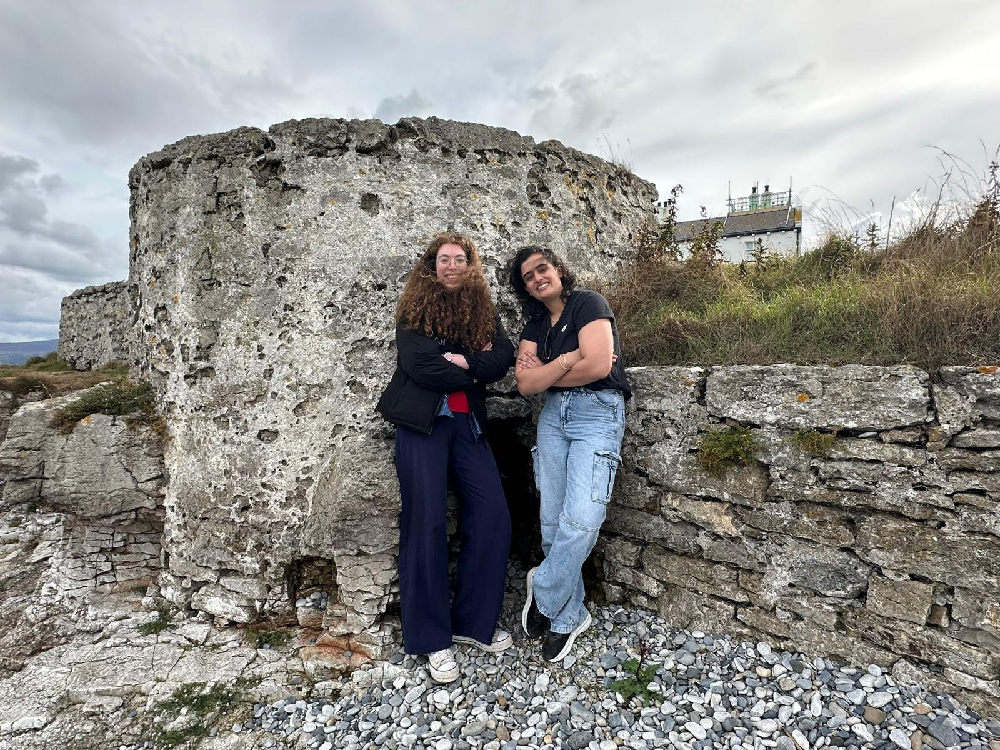

Student story
Chloe Hooton
Chloe is completing her undergraduate degree at Murray Edwards College, Cambridge. She is particularly interested in fluid mechanics and has completed a research placement at Bangor University.
-
Preparing for STEP
I tutored Chloe for STEP, alongside a little interview preparation. We worked on problems in lessons, with marking and feedback between sessions.
-
Summer school, 2025
Chloe tutored at the She Talks Science STEP Summer School at Murray Edwards College, where I was Academic Director.
-
Fluid Dynamics II
I now supervise Chloe for Fluid Dynamics II as she completes her undergraduate degree.

Thank you for all of your help with the STEP preparation. Every lesson was extremely useful, and I am very grateful for all the work you put in outside of just the lessons, marking my work as well as giving me lots of guidance throughout. Without your help, I’m sure the outcome would have been different! If I’m ever asked about how to prepare for STEP, I’ll be sure to highly recommend you.
Preparing for STEP?
Individual tuition, with carefully chosen problems, hints and feedback on your written work.